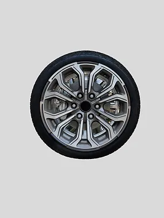

Steel

Ціна: $90
Країна: Японія
Постачальник: WHEELBU
Кількість в наявності: 230
Опис:
Шина Steel - це надійний вибір для тих, хто цінує міцність та довговічність. Ці шини мають простий,
але ефективний дизайн, який забезпечує відмінну адгезію та стабільність на дорозі.
Особливості:
Міцність і довговічність: Виготовлені з високоякісних матеріалів, шини Steel відзначаються
міцністю і стійкістю до зносу, що робить їх ідеальними для щоденного використання і тривалих
подорожей.
Стабільність і контроль: Спеціальна конструкція протектора і боковин шини забезпечує
відмінну стабільність і контроль навіть на високих швидкостях і в умовах поганої погоди.
Ефективна експлуатація: Шина Steel відзначається низьким опором коченню, що сприяє
зниженню споживання пального і забезпечує економію витрат.
Характеристики:
Розмір: 195/65R15
Індекс навантаження: 91
Індекс швидкості: T
Сезонність: Універсальна